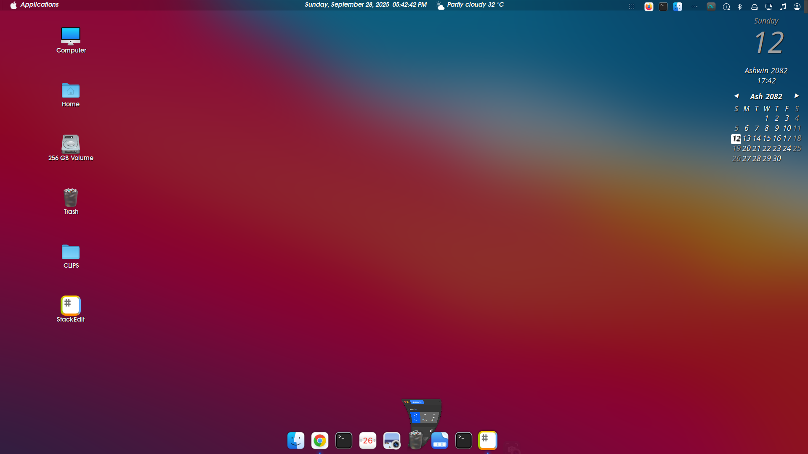

ğŸ› ï¸ My Linux Mint Cinnamon Setup — macOS Big Sur Inspired Look
🖼️ Screenshot
Here’s how my desktop looks after all the customizations:
This is my personal reference guide for setting up a macOS Big Sur–like desktop on Linux distributions that use the Cinnamon desktop environment, such as:
- Linux Mint
- Feren OS
- OpenSUSE with Cinnamon
- Debian Cinnamon Flavor
- Fedora Cinnamon Spin
- Arch with Cinnamon
- Manjaro Cinnamon Edition
I wrote this for myself so that I don’t have to go through all the hassle again when setting it up next time.
Everything below is exactly how I like my Cinnamon desktop customized.
📦 What I Usually Do
- Final Result Preview
- Initial Setup
- Install GTK Theme - WhiteSur Light/Dark
- Install Icons Theme - WhiteSur Light/Dark
- Install Cursors Theme - McMojave
- Configure Panel and Applets
- Install and Configure Plank Dock
- Install and Configure Albert Launcher
- Install and Configure Conky Manager
- Do Some Additional Settings
- Install Nautilus and Set it as Default File Manager
- Make Terminal Transparent
- Setup Firefox Theme
- Arrange Desktop Icons
⚙️ Initial Setup & Tweaks
The first few changes I always make before installing anything:
- In System Settings → Windows, I change the button layout from right to left.
- I update the Alt + Tab behavior to use Coverflow 3D for a more fluid window switcher.
- In Hot Corner settings, I set the top-left corner to Show Workspaces.
🧩 Extensions and Panel Customization
I install and configure a few extensions and panel tweaks right away:
- Installed Transparent Panel extension.
- Enabled it and set the transparency type to
Semi-transparent. - Disabled theme transparency within the extension’s settings.
Then, I change my background wallpaper to a macOS Big Sur–style wallpaper.
📦 macOS Big Sur Wallpaper Pack
🨠GTK Theme — WhiteSur Light/Dark
I install the WhiteSur GTK theme to get the macOS Big Sur look:
git clone https://github.com/vinceliuice/WhiteSur-gtk-theme.git
cd WhiteSur-gtk-theme
./install.sh
📠WhiteSur GTK Theme Repository
🪄 Cursor Theme — McMojave
I install the McMojave cursor theme for a polished macOS cursor feel:
git clone https://github.com/vinceliuice/McMojave-cursors.git
cd McMojave-cursors
sudo cp -r McMojave* /usr/share/icons/
📠McMojave Cursors Repository
🧰 Configuring Panel and Applets
Here’s how I usually set up my panel and applets:
- I move the panel to the top.
- I remove all pinned applications from it.
- I install the CinnaMenu applet, apply a custom logo, and rename it to Applications.
- I install a Weather applet and configure it manually:
- Entered latitude, longitude, city, country, and timezone (
Asia/Kathmandu). - Used Open-Metro Data as the weather provider (does not require API keys).
- Entered latitude, longitude, city, country, and timezone (
- I install:
- Expo Applet – Workspace manager.
- Nepali Patro Calendar Desklet –
nepalipatro@deeppradhan - Scale Applet – Shows all open windows like an application switcher (Scale Applet)
- User Applet – (no extra configuration needed)
- Calendar Applet with a custom date format:
%A, %B %e, %Y %I:%M:%S %p
- I position Weather and Calendar in the center top of the panel.
📌 Plank Dock Setup
I install and configure Plank Dock for a macOS-style dock:
sudo apt install plank
💡 Note: This is included in the WhiteSur GTK theme — no need to download separately, just for reference.
- I copy the Plank theme from:
WhiteSur-Gtk/src/other/plank
to:~/.local/share/plank/theme - Then, I select that theme from Plank settings.
- I also add Plank to the Startup Applications list so it launches automatically.
🔠Albert Launcher Setup
I install and configure Albert Launcher as a spotlight-style app launcher.
📥 Download Albert
🨠Albert Theme
💡 Note: I didn’t find a single perfect package, so this might require some trial and error — some builds will work for sure.
- After installation, I copy the theme file to:
/usr/share/albert/ - Then I select the theme from Albert’s preferences.
- I also make sure Albert is in the Startup Applications list.
📠Nautilus as Default File Manager
I prefer Nautilus as my default file manager, so I install it with:
sudo apt install nautilus
Then I set it as the default file manager in system settings.
🦊 Firefox Theme — WhiteSur
I change the Firefox browser theme following the guide from the GitHub repository:
📠WhiteSur Firefox Theme Guide
💡 This is also included inside the same WhiteSur GTK theme folder — just search for it or follow the guide above.
🖥️ Final Desktop Layout
Finally, I arrange the desktop icons and align everything to achieve a clean, macOS-like layout.
🏁 Final Thoughts
With all these steps, I transform my Cinnamon desktop into something that closely resembles macOS Big Sur — clean, elegant, and modern — while keeping the power and freedom of Linux.